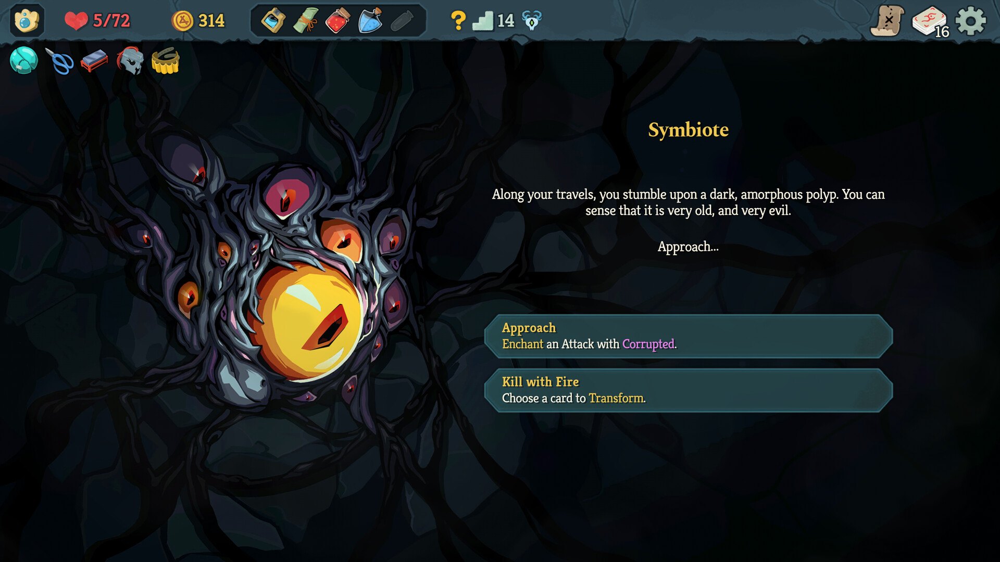

当独立游戏遇到无休止更新，《杀戮尖塔》作者哭了
谁能想到？那个让玩家“肝”到怀疑人生的《杀戮尖塔》，这次却让主创想要彻底躺平。近日，《杀戮尖塔 2》的主创 Casey Hano（注：原文若指 Casey O'Keefe/Yano，此处保留原意但去除了过度修饰）在社交平台上发了一通关于开发的牢骚，没想到引来不少玩家跟帖共鸣。他感叹，自己几乎天天都在跟各种软件、固件、游戏和操作系统打交道，更新个不停，而自家作品《杀戮尖塔 2》本身也保持着高频推送。这种从“快乐开发”到“被迫加班”的反差，瞬间击中了无数独立程序员的痛点。
![杀伤尖塔_实机_1.jpg]
天天跟系统版本冲突打架、为了一个补丁报错熬夜数周是常事？这席话透着明显的倦意：“我总是在更新软件……各种东西。”他无奈地写道，“我以后不想再做抢先体验（Early Access）了，我不想继续为这个世界增加这种烦人的事情。”对于习惯了免费游玩等待更新的玩家来说，或许难以理解为何不直接发布完整版。但开发者深知，EA 模式虽能降低门槛、通过反馈打磨产品，却也意味着要将自己暴露在无数未知的系统漏洞和兼容性灾难中。

![杀伤尖塔_实机_1.jpg]
这番言论迅速刷屏评论区，画风从最初的质疑嘲讽急转直下，变成了满满的安慰与理解。不少玩家开始反思：为什么 EA 模式如今让人反感？难道是因为我们习惯了把“半成品”当正餐吃了吗？实际上，《博德之门 3》等爆款能行并不代表所有人都喜欢无休止的等待和折腾。对于独立小团队而言，每一个版本的推送都是体力的透支，每一次系统更新都可能是一场灾难性的排查。
![杀伤尖塔_实机_1.jpg]
EA 其实是一把双刃剑。它既能帮助作品快速进入玩家视野，也能通过社区反馈修补缺陷；但代价是开发者的健康与耐心被无限压缩。当执行成本被压低到极限，“优化之路漫长”便成了行业常态。我们抱怨游戏太肝或更新太少时，或许忘了独立开发者也是在和时间赛跑。如果连主创都喊停做 EA 了，这背后的辛酸只有圈内人才能真正体会。
![杀伤尖塔_实机_1.jpg]
说到底，游戏的终极意义不在于版本号滚得有多快，而是完整体验与开发者的初心能否平衡。我们呼吁厂商珍惜开发者体力，玩家也需理性看待更新节奏——有时候稍微慢一点也没关系，只要最终呈现的是对游戏品质的尊重就好。既然无法做到完美无瑕，那就互相体谅吧。毕竟，咱们玩游戏是为了快乐……
![杀伤尖塔_实机_1.jpg]
那么问题来了：你是否也在为某个游戏的无限更新而烦恼？甚至为了等待“大版本”而长期弃坑了其他作品？欢迎在评论区聊聊你的“至暗时刻”，告诉我们哪个瞬间让你彻底不想再碰 EA 游戏。如果觉得这篇文章说出了心里话，别忘了点赞关注支持一下哦！
关于我们
📱 公众号名称：三天游戏
✍️ 作者：曾三天
扫码关注公众号，获取每日最新资讯

商务合作与版权
商务合作 / 内容投稿 / 品牌推广
请关注公众号「三天游戏」后台留言联系
版权声明：本文由作者整理，转载需注明出处。